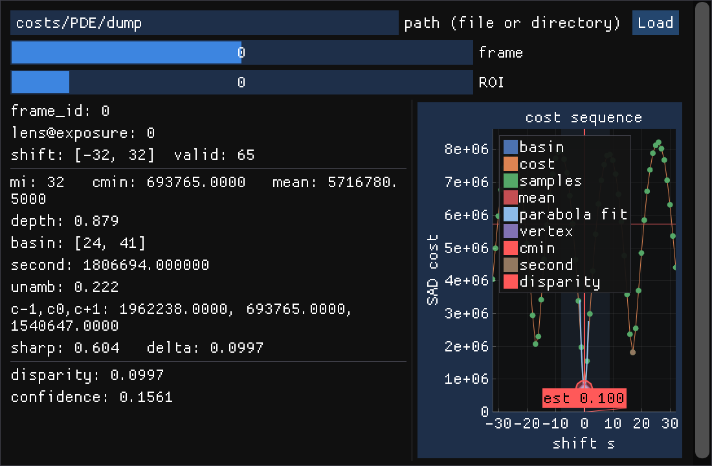

與 af-lifecycle-boundary 無關——這裡只看 M2 演算法本身：把 8 個使用者定義 ROI、search range 65（對稱窗 ±32）
的真實硬體 cost 序列直接餵給生產路徑的 ParabolicDepthEstimator::estimateTraced()，看實際量到什麼。
costs/PDE/window_cost.csv 與 costs/PDE/window_cost21.csv（gitignored，不隨 repo 分發），
各含 8 條序列（user_0~user_7），已用逐條拆解成
costs/PDE/window_cost/user_N.csv / costs/PDE/window_cost21/user_N.csv（欄位 shift,cost，
shift 對稱窗 -32~32）。兩個檔案裡 user_1~user_7 分別完全同值，
所以 16 條序列裡實際只有 4 種獨立形狀。
confidence 全部落在 0.06–0.31，遠低於模擬器情境的 0.69–0.92（見 af-lifecycle-boundary）。
| 序列 | disparity | confidence | mi (shift) | boundary | depth | unamb | sharp |
|---|---|---|---|---|---|---|---|
| window_cost / user_0 | 0.0997 | 0.156 | 0 | no | 0.879 | 0.222 | 0.604 |
| window_cost / user_1~7 | 0.4225 | 0.216 | 0 | no | 0.688 | 0.539 | 0.167 |
| window_cost21 / user_0 | 0.8534 | 0.057 | +1 | no | 0.753 | 0.110 | 0.363 |
| window_cost21 / user_1~7 | 0.7614 | 0.310 | +1 | no | 0.733 | 0.693 | 0.219 |
四條都沒有落在窗口邊界（boundary=no），depth（谷底相對深度）其實都不差（0.69~0.88），但 unamb（次谷歧義度）普遍偏低——confidence 被壓低的主因不是「谷不夠深」，是「窗口內另外還有夠深的競爭谷」。
pdaf_cost_viz
不必另外刻圖表：pdaf_cost_viz（tools/cost_viz/main.cpp）本來就是為了視覺化任意 cost 序列而寫的，
只要把資料包成它讀取的 --dump-costs JSON schema，就能直接開來看，完全不用改動任何專案原始碼。

costs/PDE/dump（由 window_cost.csv 轉出）：frame 0 / ROI 0 = user_0，disparity=0.0997、confidence=0.1561，與 estimateTraced() 表格數字一致。
pdaf_cost_viz 需要的 JSON 欄位（tools/cost_viz/main.cpp L56–90）：meta.{frame_id,timestamp_ms,lens_step_at_exposure}、
hw_costs[].{shift_min,costs,valid_samples}（每個 ROI 一筆）、ground_truth_disparity（選填，硬體資料沒有就省略）。
用下面的轉換 script 把 window_cost*.csv 包成這個格式即可：
cmake --preset default -DPDAF_BUILD_GUI=ON && cmake --build --preset default
python3 docs/m2-estimator-hw-cost-characteristics/tools/csv_to_dump.py \
costs/PDE/dump costs/PDE/window_cost.csv costs/PDE/window_cost21.csv
./build/tools/pdaf_cost_viz costs/PDE/dump # frame 滑桿切 window_cost/window_cost21，ROI 滑桿切 user_0~7逐一列出每條序列在 ±32 窗口內的所有局部極小值，位置呈明顯等間隔。
| 序列 | 局部極小值位置（shift） | 間距 |
|---|---|---|
| window_cost / user_0 | -17, 0, 17 | ~17 |
| window_cost / user_1~7 | -28, -14, 0, 14, 29 | ~14 |
| window_cost21 / user_0 | -29, -14, 1, 16, 30 | ~15 |
| window_cost21 / user_1~7 | -26, -13, 1, 14, 28 | ~14 |
四條序列都在 ±32 的搜尋窗內出現等間隔（~14–17 samples）的多個局部極小值——這與 CLAUDE.md 裡「紋理頻率需低於 π/max_shift」的 aliasing 警告是同一件事，差別是這次是在真實硬體資料上實測到，不是模擬器裡的理論推演：模擬器刻意把紋理頻率壓在安全邊界下（且離焦模糊會進一步抑制高頻），所以幾乎不會出現這種多谷結構；真實 ROI 內的重複紋理／週期結構顯然沒有這層保護。
unamb 正是為了偵測這種情況設計的（見 parabolic_depth_estimator.cpp 的次低點檢查邏輯）——它在這 4 條真實資料上確實發揮作用，把 confidence 從單看 depth 會有的 0.69~0.88，壓低到反映真實不確定性的 0.06~0.31。
兩個 standalone 工具，都不掛進專案的 CMake build。
g++ -std=c++17 -O2 -Iinclude -Isrc \
docs/m2-estimator-hw-cost-characteristics/tools/run_estimate.cpp \
src/algo/parabolic_depth_estimator.cpp \
-o run_estimate
./run_estimate costs/PDE/window_cost/user_*.csv costs/PDE/window_cost21/user_*.csvpython3 docs/m2-estimator-hw-cost-characteristics/tools/csv_to_dump.py \
costs/PDE/dump costs/PDE/window_cost.csv costs/PDE/window_cost21.csv
./build/tools/pdaf_cost_viz costs/PDE/dump